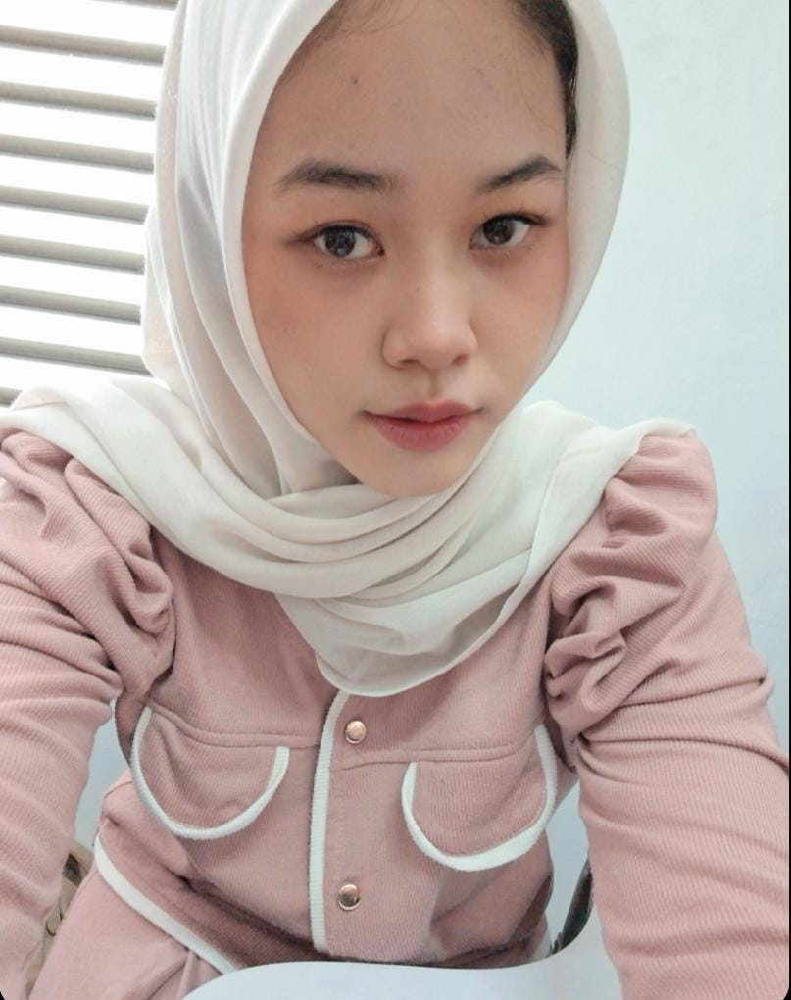
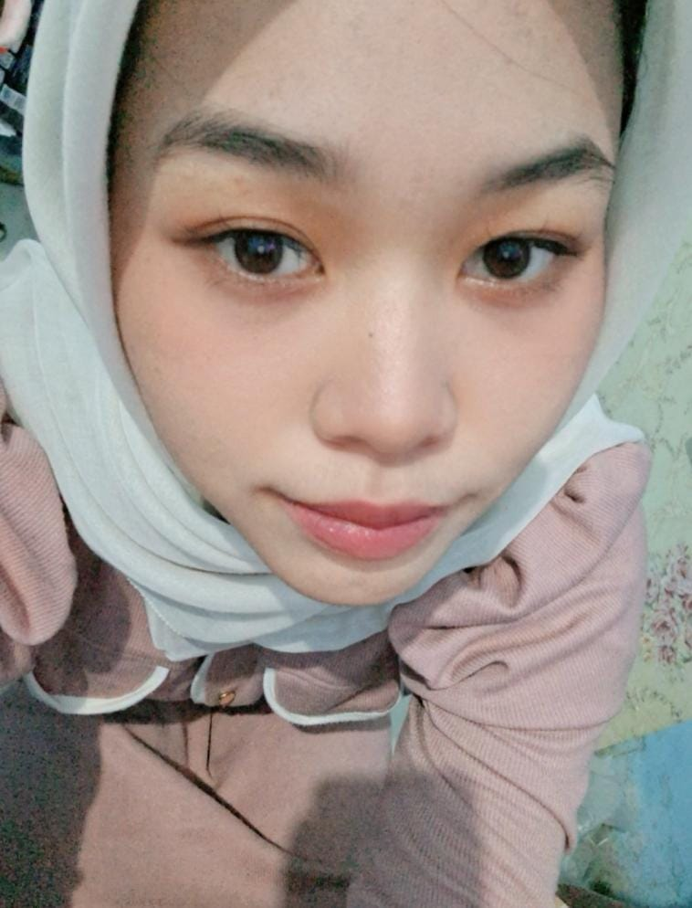
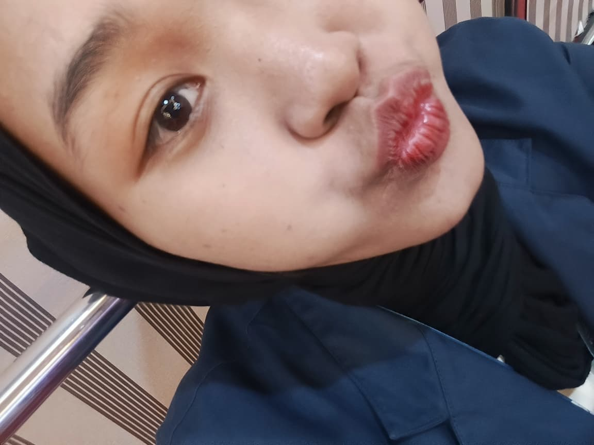

Yeayyy! Aku Juga Sayang Banget! ❤️
Coba dibaca ya pelan-pelan ke bawah... 👇
Teruntuk Kesayanganku...
Hai sayang... Mungkin halaman web ini kelihatannya sederhana, tapi percayalah, semua kata yang ada di sini aku buat khusus untuk mengungkapkan betapa berartinya kamu buat aku. Sejak pertama kali kita kenal dan dekat, aku nggak pernah nyangka kalau hari-hariku bakal berubah jadi jauh lebih berwarna karena kehadiranmu.
Kamu itu rasanya seperti pelangi setelah hujan lebat. Di saat aku lagi capek-capeknya sama urusan dunia, di saat pikiran lagi berisik banget, denger suaramu atau sekadar dapet notif chat dari kamu aja udah cukup buat bikin senyum aku balik lagi. Kamu selalu punya cara yang ajaib buat bikin aku merasa aman dan dicintai.
Lewat pesan ini, aku mau ngucapin banyak banget terima kasih. Terima kasih ya, udah selalu sabar ngadepin sifat aku yang kadang nyebelin dan egois. Terima kasih udah selalu mau dengerin cerita-ceritaku yang nggak jelas dari A sampai Z. Dan yang paling penting, terima kasih karena kamu selalu milih untuk bertahan sama aku di saat semuanya nggak mudah. Kasih sayang, usahamu, dan perhatian-perhatian kecilmu itu luar biasa berharga buat aku.
Aku tau, perjalanan kita ke depannya mungkin nggak akan selalu mulus. Pasti ada aja kerikil, salah paham, perdebatan, atau masa-masa di mana kita lagi capek satu sama lain. Tapi satu hal yang perlu kamu selalu ingat: perasaanku ke kamu jauh lebih besar dari semua masalah yang akan kita hadapi. Kamu adalah salah satu alasan terbaikku untuk semangat memulai hari, dan nama yang selalu aku doakan sebelum tidur di malam hari.
Semoga kita bisa terus bareng-bareng ya. Kita ciptain lebih banyak lagi kenangan-kenangan manis, kita lewatin susah senangnya dunia ini sama-sama sambil terus berpegangan tangan. Tolong jangan pernah bosan ya sama aku, karena aku selalu pengen kamu. I love you, yesterday, today, tomorrow, and forever. 💕
- Dari aku yang paling menyayangimu -

Love You

My Everything

Forever 💖
Video Spesial Kita,gapunya vidio special kita
*(kita tidak ada vidio sayangg,sama sayang vidio waktu kita dijalan)*